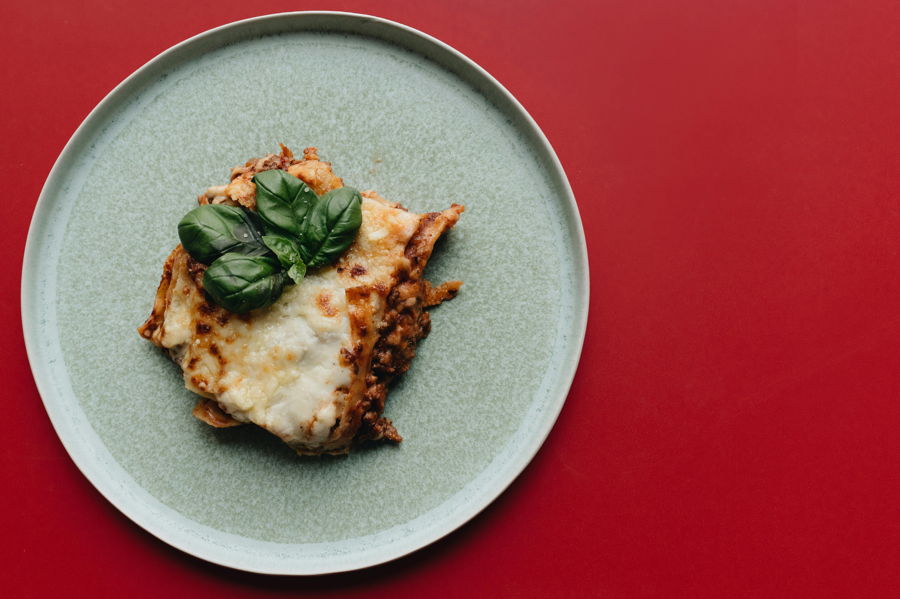

Lasagna
Back to Odin Recipes

Description
Delicious layers of pasta, creamy cheese, and rich meat sauce make this classic lasagna a family favorite.
Ingredients
- 1 pound ground beef
- 1 onion, chopped
- 2 cloves garlic, minced
- 1 can (28 oz) crushed tomatoes
- 2 teaspoons dried basil
- 1 teaspoon salt
- 1/2 teaspoon black pepper
- 12 lasagna noodles
- 16 ounces ricotta cheese
- 1 egg
- 3/4 cup grated Parmesan cheese
- 4 cups shredded mozzarella cheese
Steps
- In a large skillet, cook the ground beef, onion, and garlic over medium heat until browned.
- Add the crushed tomatoes, basil, salt, and pepper. Simmer for 10 minutes, stirring occasionally.
- In a bowl, combine ricotta cheese, egg, and 1/2 cup Parmesan cheese.
- Preheat oven to 375°F (190°C).
- In a 9x13-inch baking dish, spread 1 cup of meat sauce.
- Layer with 3 lasagna noodles, 1 cup of ricotta cheese mixture, and 1 cup of mozzarella cheese.
- Repeat layers until all ingredients are used, ending with mozzarella cheese on top.
- Sprinkle remaining Parmesan cheese over the top.
- Bake in preheated oven for 25-30 minutes, or until bubbly and golden.
- Let stand for 10 minutes before serving.